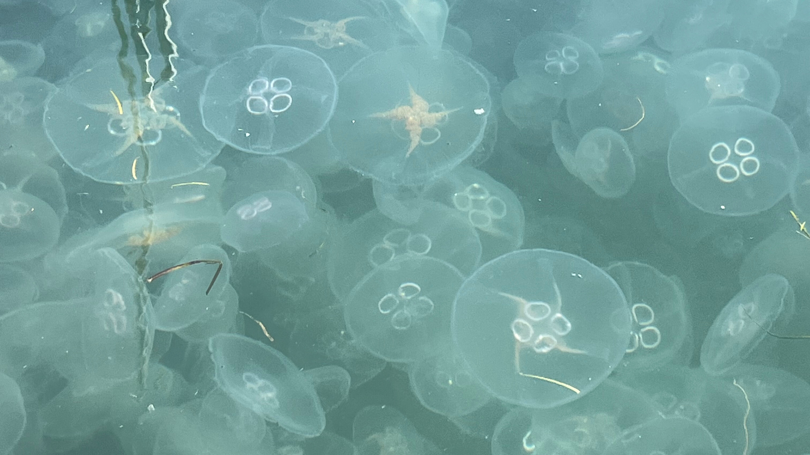

私たちは、海の生き物と人間が持続可能に共生できる世界を作ります。そのためにまずは、沿岸産業に被害を与える代表的な生物であるクラゲと人間の衝突を減らし、「厄介者」という認識をなくしていかなければなりません。
しかし現状、クラゲによる産業被害が毎年のように起こっており、沿岸産業にとってクラゲは完全な「厄介者」。
クラゲが大量に発生して産業被害を引き起こしているという問題に対して、私たちは新たなソリューションを提供します。
最新ニュース
-
2026.03.01 #お知らせ
くらげクラフトが、「VOIX Biz」に掲載されました
株式会社VOIXが運営する、ビジネスの最新情報をお届けするWebメディア「VOIX Biz」にくらげクラフトが掲載されました。丁寧にリリ...
-
2026.03.01 #お知らせ
くらげクラフト発売のリリースが、サステナビリティ情報を紹介するWEBメディア cokiに掲載されました
株式会社Saccoが運営する、法人のサステナビリティ情報を紹介するWEBメディアサイト「coki」に、"100億円の厄介者が「美酒」に化...
-
2026.02.24 #プレスリリース
クラゲのクラフトビール、「くらげクラフト」を発売しました
2月19日(木)に、クラゲを実際に使用したクラフトビール、「くらげクラフト」を発売いたしました。限定400本を、クラウドファンディングサ...
サービス
[くらげクラフト画像]
くらげクラフト
世界初*の、クラゲのクラフトビール
大量発生してしまったクラゲを使った、世界初*のクラゲのクラフトビールです。コラーゲンも水分もまるっと閉じ込め、クラゲの持つ清涼的なイメージに合わせて、シンプルですっきりとした味わいに仕上げました。
*弊社調べ
お問い合わせ
お問い合わせやご依頼は、お気軽に以下のフォームからご連絡ください。一週間以内に返信いたします。
お問い合わせはこちら